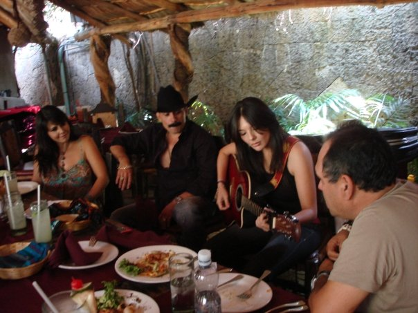
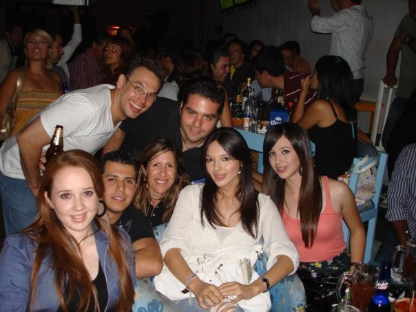

b e a t r i c e a i s p u r o
09.18.09
Sr. Jorge Tanaka Mora,
Fué un placer conocerlos en Guadalajara. Nos divertimos bastante con ustedes. Gracias por dos días llenos de vida: buena plática, risas, comida y bastante esperanza hacia el futuro. He puesto unas fotos en Facebook de mi viaje y había "tagged" (markado) 2 fotos de Valentina. La marqué como Valentina para empezar la V.. Ella ya se lo agregó también. Así crece. V.:....
Es importante mantener una presencia en todos los circulos sociales para aprender del público y también allí está el mejor advertising-en las manos de los usuarios, aficionados de música, (el entretenimiento fuera de la computadora). Facebook (fb) es una buenísima forma de mantener contactos con familiares y topicos de interés. Todos estamos tan ocupados hoy en día que no siempre tenemos tiempo de levantar el telefono, que por cierto lo hice dos veces ayer para llamarle...
La primera vez que le marqué, me dijeron que llamara en una hora y a la siguiente me preguntaron, el Sr. Jorge Tanaka menor o mayor ? Mayor le contesté, y me dijo que no mantiene ud. horario. Es por esto decidí mandarle un correo. Me llama cuando tenga una oportunidad para platicar sobre varias ideas.
1) Creo que una página de Facebook es crítico para cada artista y equipo/departamento. Cuando "tagié"/marqué la foto de Valentina y el Chapo, me puse a pensar en lo fundamental que es mantener una página de web en conjunto CON páginas en Facebook. Todos con el mismo mensaje; "loOk"
Leí que Obama ya puso a alguen encargado de esto para EEUU/gov. Y ya era tiempo. Hay que estar al tanto con la technología. La imagen technologicamente avanzada, no importa el producto, debe apelar a la moda avanzada de hoy... + Classy never goes out of style.

LA UNICA foto QUE TOME
El Chapo sin página en fb ni idea tiene que lo marqué. Claro que yo solo pondría fotos positivas y que se vean bonitas. Pero es essencial SABERLO cuando NO ES EL CASO para mantener un imagen de buena luz. Al tener cuenta/página en esos sitios, hay mas control porque sabe uno cuando alguen lo taggea. Aparece la foto en la página de uno. Así puede tabular lo que está circulando y deshacer lo que no le gusta. Sin conocimiento, que se puede hacer.!? Hay que usar la ocación para beneficio también. FREE ADVERTISING !!! Para mantener control, hay que saber usar la herramienta. Uno puede seleccionar cual información ve el público. Solo que hay que buscarle para encontrarle.
Para esto ofrezco mucho tipo de entrenamiento en software, web, computadoras. Como decía su hija, hay tantas cosas que aprender a usar para manejar la información efectivamente (facebook es solo una herramienta de potencial). Yo ofrezco todo tipo de entrenamiento (fb, software, diseño, computers) para empleados o familiares, ya que he sido maestra toda mi vida. Primero en el colegio a niños en la primaria (Segundo grado con toda instrucción en español). Después como la primera webmaster en Caltech tuve oportunidad de estudiar en las mejores escuelas en Caltech y Art Center College of Design. Fuí maestra de html y diseño para empleados, estudiantes, y profesores en Caltech y luego entrenaba en las compañías (.com) por todo California. Me encanta enseñar // compartir lo que sé. Creo que soy buena porque tuve que sobresalir aun los retrasos por el accidente. Aprendí paciencia & tricks.!
Por sierto, compartiré un link (mi carta de aplicación para una becca Fulbright, que tuve que abandonar por la construcción de mi casa) >>> http://www.begrafic.com/fulbright/ Puede leer un poco sobre mi vida...
Idea 3) A todo mundo nos encanta seguir aprendiendo. Una forma de mantener a su público al tanto de sus proyectos es con un newsletter que va por email cada mes o tercena. Puede incluir fotos de los artistas, de producción, establecer su imagen, darles INSIGHTS en lo que viene, conciertos, promociones. La tarjeta que recibí del representante de Chapo puede tener mejor vista, la verdad. Es muy facil, con poquito detalle, mantener el look en todo material para sobresalir y tener valor de oro. Los detalles son lo que hacen un buen programa de relaciones públicas, como lo ha de saber con sus negocios.

VIENDO EL FUTBOL :: MEXICO ALCANSA A GANAR
Incluyo algunos links a proyectos por si le interesa ver más de mis talentos --apesar de la comedia que los pudo hacer lloraR la otra noche...
Muchos saludos,
Beatrice Aispuro
cc: el chapo (via JLM)
valentina

:: cv
:: portafolio || web
site
:: rediseño de folleto
(brochure)
:: logos || anuncios paginas amarillas
:: portal nuevo y traducción de tiendas
Victory Sweepers, Inc.